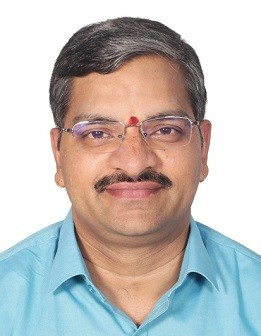

Secretary, ISSMGE TC 302
Forensic Geotechnical Engineering
Dr. Satyanarayana Murty Dasaka F.IGS
Professor, Geotechnical Engineering
Department of Civil Engineering
Indian Institute of Technology Bombay
Powai, Mumbai – 400 076, INDIA
Dr. Dasaka S. Murty is a Professor in the Department of Civil Engineering at IIT Bombay, where he has served on the faculty since 2007. He received his Ph.D. from the Indian Institute of Science, Bangalore (2006) and was a post-doctoral research fellow at the Hong Kong University of Science and Technology before joining IIT Bombay.
His research spans forensic geotechnical engineering, earth pressures and retaining walls, shallow and pile foundations, pile load testing, tunnelling and underground excavations, ground improvement and geosynthetics. His group has developed compressible geo-inclusion (EPS geofoam) and relief-shelf techniques for earth-pressure reduction, calibration methods for earth pressure cells, and field-instrumented studies of retaining structures. He holds two Indian patents and has guided 11 Ph.D. theses.
- 2025 Organizing Chairman, 1st GeotechAsia, 7–10 October 2025, Goa.
- 2025 IGS-AIMIL-HCV YGE Biennial Award for the best paper on Geotechnical Investigation and Testing (Geotechnical Testing Journal, ASTM).
- 2025 Co-editor, GeoVadis: The Future of Geotechnical Engineering, Vols. 1 & 2, CRC Press.
- 2025 Indian Patent No. 567425 granted: Soft cohesive soil consolidation with stone columns.
- 2025 Vice-Chairman, GATE-JAM 2026, IIT Bombay.
- 2024 Editorial Board Member, Soils and Foundations, Japanese Geotechnical Society.